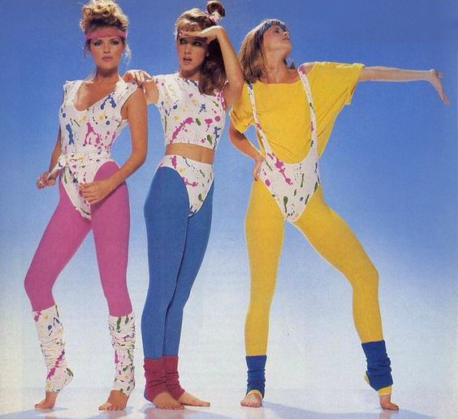

Fashion in the 1970s was about individuality. In the early 1970s, Vogue proclaimed “There are no rules in the fashion game now” due to overproduction flooding the market with cheap synthetic clothing. Common items included mini skirts, bell-bottoms popularized by hippies, vintage clothing from the 1950s and earlier, and the androgynous glam rock and disco styles that introduced platform shoes, bright colors, glitter, and satin. A lot of new looks immersed during that period. Among them we can name the Hippie look, Glamour wear, Casual looks, Active wear, Tailored styles, One-piece swimsuits, Disco look and many more. There are also some more accentuated looks, that have a statement to them, like Punks, Heavy metal style and others.
Some more "crazy" styles can be seen during the period of eighties, also known as a disco time. Women would wear a lot of glitter and one-piece suits on top of the colorful tights and have a hair full of volume. The makeup also was very bold. In my opinion this was a peak of the fashion revolution that started during the sixties, and after that, in mid nineties, fashion trend started to "calm down" and be more casual and less bold and colorful. That being said, nowadays, a western woman can wear whatever she wants, and there is a lot to choose from after the massive turbulence in the fashion world during the 20th century.
